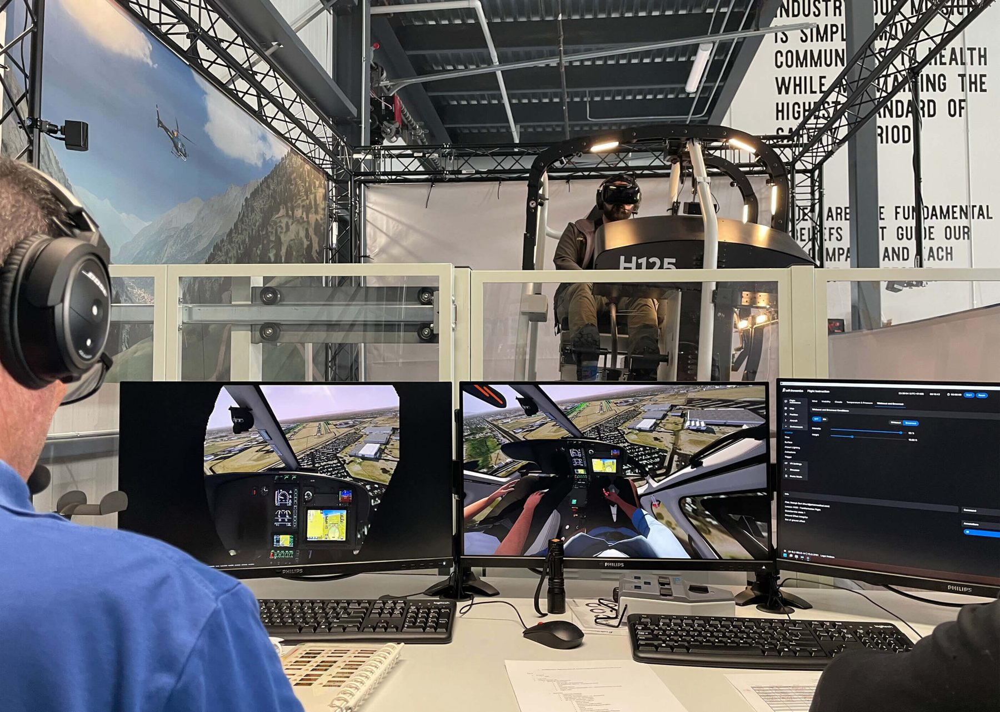
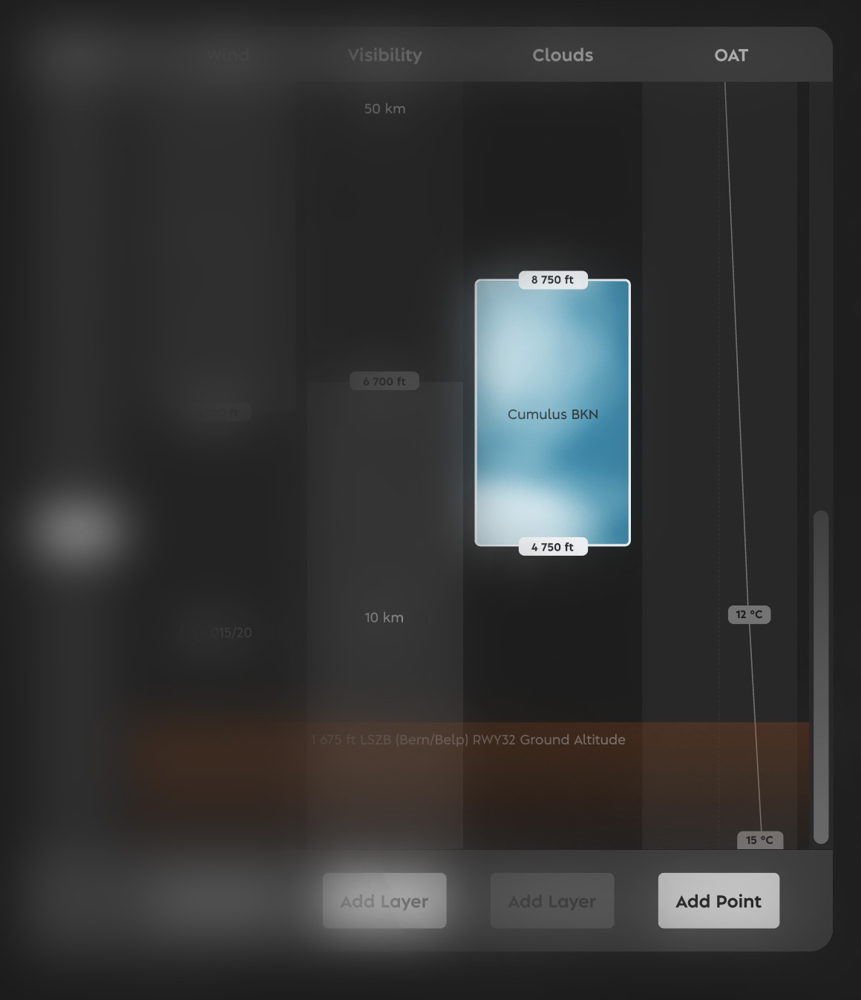
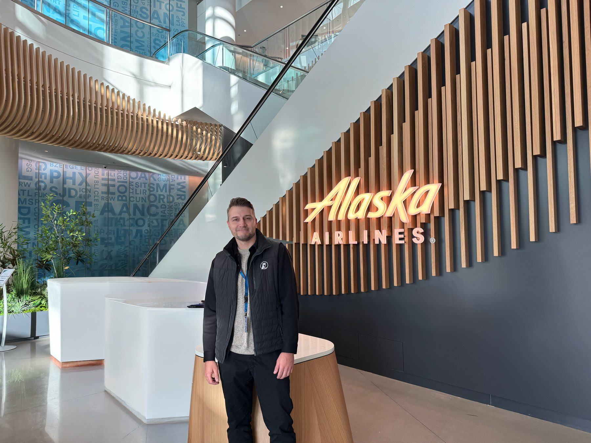
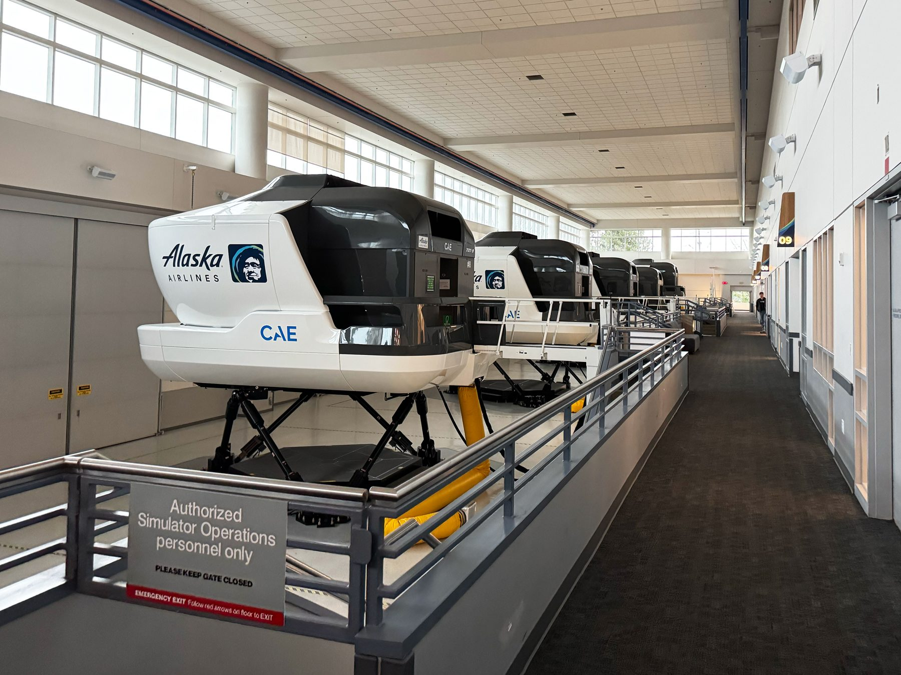

Instructor Operating Station
Turned an engineer-built IOS into a coherent, instructor-driven system. Its weather page went from five tabs to one altitude-based page, and the research set the course for one touch-first IOS for helicopter and fixed-wing.
- Client
- Loft Dynamics
- Country
- Switzerland
- Industry
- Aviation, VR flight simulation
- Year
- 2025–2026
- My role
- Primary UX designer, helicopter IOS; lead UX, fixed-wing concept
- Team
- Three-person UX team on the fixed-wing concept

Problem
Three helicopter simulators shared one Instructor Operating Station. Its function display, where instructors set weather, aircraft and more, had been built step by step by different engineers.
- Inconsistent layouts from page to page
- Features that were hard to find
- Too many clicks for routine tasks
- Weather alone took five tabs, set for one location at a time, by filling in fields
- Expanding into fixed-wing, where touch is the standard, raised the bar further

Approach
Every decision traces back to evidence. Each step has an ID, and every insight and decision names the evidence it came from. The steps below are an example from this project.
S001
Source
Instructor and pilot interviews
30+ conversations with instructors and pilots on Loft's helicopter simulators, including dream sessions on the perfect weather setup.
S002
Source
Alaska Airlines, Seattle
A four-day workshop: interviews, simulator observation, scenario walkthroughs and lesson planning.
S003
Source
Lufthansa Aviation Training, Zurich
Two days shadowing instructors and studying their lesson-planning software.
E001
Evidence
A patchwork display
Inconsistent layouts, hard-to-find features, too many clicks.
From S001
E002
Evidence
Five tabs, one location
Setting the weather meant hopping between five tabs and filling in fields.
From S001
E003
Evidence
Screens on board, in motion
Fixed-wing IOS screens sit on full-motion simulators, where a mouse can't be used.
From S002, S003
I001
Insight
Instructors think in altitude
Asked to dream the perfect setup, every instructor arrived at an altitude-based format.
From S001
I002
Insight
Touch is mandatory
For fixed-wing, the IOS has to be designed for touch first.
From E003
I003
Insight
Training follows lesson plans
Airlines work through prepared scenarios, unlike the more ad hoc helicopter training.
From S002, S003
D001
Decision
One altitude-based weather page
Weather layers set by drag and drop, for several airports at once.
From E002, I001
D002
Decision
Temperature by altitude
I'd planned a single field. Instructors asked for temperature curves, and I changed my mind.
From I001
D003
Decision
One IOS for both
A single flexible IOS for helicopter and fixed-wing.
From I002, I003
D004
Decision
Eight design pillars
Defined and presented at Alaska Airlines to guide every page.
From E001, I003
Solution
I was the primary UX designer on the helicopter IOS redesign, including input on hardware decisions, and lead UX on the fixed-wing concept, doing about 60% of the UX work in a team of three.
Phase 1: helicopter redesign, starting with the weather page
I redesigned the mouse-based IOS one page at a time, and each page shipped. The weather page came first and became the most visible result: designed with touch in mind, adapted for mouse, so it works in both.
- One page instead of five tabs, with METAR integration
- Weather for departure, arrival and alternate airports, my own insight from the interviews
- Weather layers set by drag and drop instead of form fields
- Temperature curves by altitude, asked for by instructors once the layout was altitude-based

Phase 2: a concept for one touch-first IOS, for both helicopter and fixed-wing
From the research at Alaska Airlines and Lufthansa, I defined eight design pillars and presented them to Alaska's leadership. The map was the open question: available on every page, and as familiar as the maps people use on their phones.


Outcome
The helicopter pages shipped, with one weather page in place of five tabs. Built from 30+ instructor and pilot interviews, it felt tailor-made to the instructors, and the concept work that followed rests on eight design pillars I defined. Alaska Airlines leadership valued the long-term thinking and a concept that is expandable, adjustable, customizable and timeless. With less than a year in the industry, my outside view was called an advantage: not the same solution in new packaging, but a concept that tackles problems they had faced for decades.
“He was particularly good at grasping complex requirements quickly, structuring different user and business interests, and deriving clear, practical design solutions from them.”
 Fabi Riesen, founder and former CEO & CTO · Loft Dynamics · Switzerland
Fabi Riesen, founder and former CEO & CTO · Loft Dynamics · SwitzerlandTranslated from the German reference letter